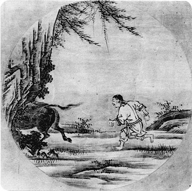

| LIVE ZEN in Estonia is a web page and a physical space offered by a disciple of Osho, who will assist people in discovering the spring, the source of their individuality by using methods that are applied in Osho communes, and is open to any other creative approach that enhances aliveness and alertness. |  |
|
IN SEARCH OF THE BULL Awareness Intensive In the 12th century a Chinese Zen Master painted a new version of a series of Taoist pictures and added two more pictures to the original eight. He did not only paint the story, he also added commentaries both in verse and in prose. They became famous as the "10 Bulls of Zen" and have been used in the practice of Zen over the centuries. " The bull is a symbol of energy, vitality, dynamism. The bull means life itself. The bull means your inner power, your potentiality." (Osho) Zen also uses techniques to engage the disciple in an enquiry that will eventually exhaust his mind so totally that he dares to go beyond the mind and jumps into being-ness. They are called "Koan". The disciple works on his own with his koan, his question. In 1968 Charles Berner in America had the brilliant idea to make students work in pairs while they are pursuing a koan, supporting each other with their non-judgemental presence in a very intense setting, from morning to night. In the group Awareness Intensive the participants work with the koan" Who is in?" Each day is highlighted by the original "10 bulls of Zen" and Osho`s commentaries on them. Other activities aside from the Awareness Intensive group: Meditation Camps - using new and old techniques The Language of Touch - developing sensitivity and body awareness and learning how to give a massage Meditative Therapies such as Mystic Rose, Born Again and No-Mind that enable to shed the many layers covering the self. |
||
| Zen Osho Activities Contact Gallery |